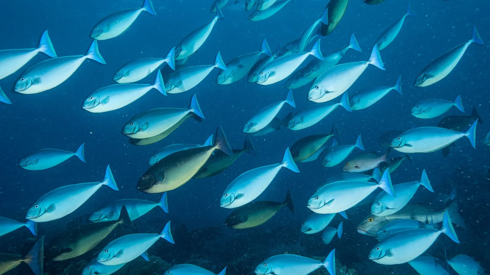
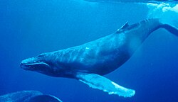
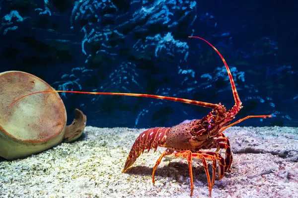
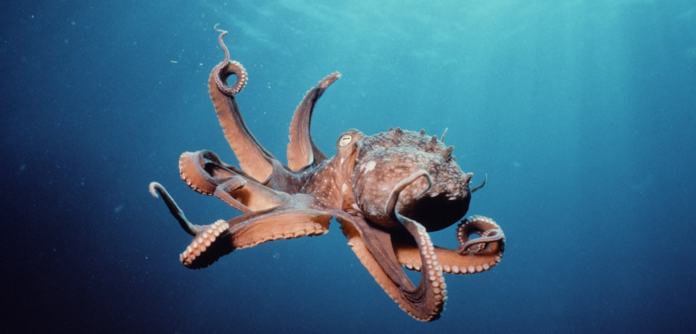

Tipos de animais marinhos
Aqui falaremos os principais tipos de animais marinhos que existem, mostrando como essa categoria de animais é tão abrangente.
Aqui falaremos os principais tipos de animais marinhos que existem, mostrando como essa categoria de animais é tão abrangente.
Obviamente o mais popular, os peixes são a maioria nos mares, respiram principalmente por brânquias, possuem nadadeiras que ajudam na locomoção e apresentam uma enorme variedade de formas e cores. Alguns vivem em cardumes para se proteger, enquanto outros preferem nadar sozinhos.
Os mamíferos aquáticos, como golfinhos, baleias e focas, respiram ar pelos pulmões e precisam subir à superfície regularmente. Eles são de sangue quente, alimentam seus filhotes com leite e possuem grande inteligência, sendo capazes de se comunicar de diferentes formas.
Entre os répteis aquáticos, destacam-se as tartarugas-marinhas, crocodilos e algumas serpentes que se adaptaram à vida na água. Eles têm pulmões, pele com escamas resistentes e botam ovos, geralmente em terra firme. As tartarugas, por exemplo, fazem longas viagens entre oceanos para se alimentar e retornar às praias onde nasceram para desovar. Esses animais mostram como a vida pode se adaptar tanto ao ambiente aquático quanto terrestre.

Os crustáceos são invertebrados com um exoesqueleto rígido, que precisam trocar ao longo da vida para crescer. Caranguejos, camarões e lagostas são alguns exemplos famosos. Eles podem viver em mares, rios e regiões costeiras, desempenhando funções vitais no ecossistema, como reciclar nutrientes e servir de alimento para diversas espécies. Além disso, apresentam comportamentos curiosos, como cavar tocas na areia ou se esconder em conchas para se proteger.
Os cnidários, como águas-vivas, anêmonas e corais, possuem tentáculos com células urticantes que usam para capturar alimento. Já os moluscos englobam animais como polvos, lulas e caramujos, conhecidos por seus corpos moles e, muitas vezes, por conchas protetoras. Alguns moluscos, como os polvos, são extremamente inteligentes e podem mudar de cor para se camuflar. Juntos, cnidários e moluscos representam a grande diversidade e beleza da vida marinha.
